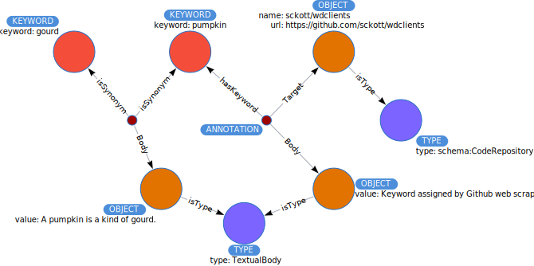

KEYWORDs¶
A KEYWORD can be associated with any ANNOTATION. A common use would be to
help discover an OBJECT associated with a keyword such as climate or cheese.
Keywords could be associated with an AGENT or any other node type, but a KEYWORD is always connected through an ANNOTATION.

In this way, a KEYWORD may be associated with another KEYWORD through a synonymy which would be represented as indicated below.
Matching Keywords¶
We often want to do a simple keyword search.
MATCH (k:KEYWORD {keyword: $userkw})
MATCH (k)<-[:hasKeyword]-(a:ANNOTATION)
MATCH (a)-[:Target]->(ob:OBJECT)
MATCH (ob)-[:isType]->(ty:TYPE)
MATCH (a)-[:Body]->(obb:OBJECT)
RETURN properties(ob), ty.type, obb.value
This returns all objects (of any kind) associated with that keyword, the type of object (ty.type), and then the annotation text used to create the keyword link. It may be that some keywords come from an authority (for example, the database or code repository has defined them directly), and others may have been added by a Throughput user.
Each ANNOTATION is tagged by the AGENT who Created the annotation, and the AGENT (most commonly a SoftwareAgent) who Generated the ANNOTATION. This means we can also filter by AGENT or add the AGENT information to the query to get better information about the keyword relation.
SYNONYMY¶
There are cases where assigned keywords may be too precise, or have spelling errors. To account for this we can also use a synonymy. Synonymy is indicated by the relationship isSynonym connecting two KEYWORD elements through an ANNOTATION. This format allows us to have a TextBody OBJECT that contains information about why the synonymy was generated, and the agent who generated that synonymy.

Matching with Synonyms¶
In this case we can match by:
MATCH (k:KEYWORD {keyword: $userkw})
OPTIONAL MATCH (syn:KEYWORD)<-[:isSynonym]-(:ANNOTATION)-[:isSynonym]->(k)
WITH COLLECT(syn) + COLLECT(k) AS kws
MATCH (kws)<-[:hasKeyword]-(a:ANNOTATION)
MATCH (a)-[:Target]->(ob:OBJECT)
MATCH (ob)-[:isType]->(ty:TYPE)
MATCH (a)-[:Body]->(obb:OBJECT)
RETURN properties(ob), ty.type, obb.value
This will look for all keywords and keyword synonyms, and then find all objects associated with them. Again, we can filter by TYPE, AGENT or other elements to get a better subset of results.